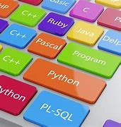
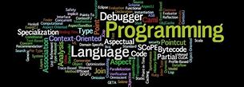
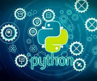
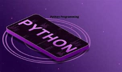
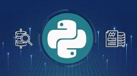
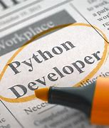

Hundreds of malicious Python packages found stealing sensitive data
Meta contributes new features to Python 3.12 - Engineering at Meta
Topics to Cover to Master Python Programming
How Python Swallowed the World
Modular makes its AI-optimized Mojo programming language generally available
This Python for beginners bundle is only $23.97
Python top programming language in new survey – what happened to JavaScript? • DEVCLASS
You can now use Python in Excel
Introducing Immortal Objects for Python - Engineering at Meta
Python Engineer Skills: What You Need to Know
Python is 57x slower than C++ (and 45x worse for the planet)
Best free Python courses
Python For Beginners: Online Tutorials – Forbes Advisor
A first look at the Mojo language
History of Python programming language
Top 10 Python Programming Books for Beginners
Python-based compiler achieves orders-of-magnitude speedups
Mojo Lang: The New Programming Language
How to learn Python with ChatGPT
MIT Turbocharges Python’s Notoriously Slow Compiler
7 Must-Have Python Tools for ML Devs and Data Scientists
Developer Q&A: Pablo Galindo Salgado Talks Python's Speedy Future
How to Use ChatGPT for Python Programming
Is it finally time to remove the Python GIL?
This New Programming Language is Likely to Replace Python
10 Simple Steps to Learn Python Programming
Python full stack web development course in Hyderabad: Free classes to begin on Oct 9
Programming languages: How a team of developers at Microsoft are helping make Python faster
Top Posts January 16-22: ChatGPT as a Python Programming Assistant
Python, Java, C, C++ Extend Programming Language Dominance
The Top Programming Languages to Learn in the Life Sciences
How to Use ChatGPT for Python Programming?
Top 10 Features of Python Programming Language
What is the Best Language for Machine Learning? (October 2023)
How to Become a Python Developer
Learning How to Use ChatGPT to Learn Python (or anything else)
Python Certifications: Do They Exist? Are They Worth Earning?
Learn the Python programming language online for just $30
What are the Benefits of Learning Python Programming Language?